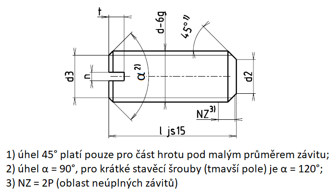

Příklad označení stavěcího šroubu se závitem M5, délky l=20 mm, pevnostní třídy 14H:
STAVĚCÍ ŠROUB ISO 4766 – M5×20 – 14H
| Závit d | M1,2 | M1,6 | M2 | M2,5 | M3 | (M3,5) | M4 | M5 | M6 | M8 | M10 | M12 |
|---|---|---|---|---|---|---|---|---|---|---|---|---|
| d2-h14 | 0,8 | 1 | 1,5 | 2 | 2,2 | 2,5 | 3,5 | 4 | 5,5 | 7 | 8,5 | |
| d3 | = malému průměru závitu d3 | |||||||||||
| n | 0,2 | 0,25 | 0,25 | 0,4 | 0,4 | 0,5 | 0,6 | 0,8 | 1 | 1,2 | 1,6 | 2 |
| nmin. | 0,26 | 0,31 | 0,31 | 0,46 | 0,46 | 0,56 | 0,66 | 0,86 | 1,06 | 1,26 | 1,66 | 2,06 |
| nmax. | 0,4 | 0,45 | 0,45 | 0,6 | 0,6 | 0,7 | 0,8 | 1 | 1,2 | 1,51 | 1,91 | 2,31 |
| tmin. | 0,4 | 0,56 | 0,64 | 0,72 | 0,8 | 0,96 | 1,12 | 1,28 | 1,6 | 2,0 | 2,4 | 2,8 |
| tmax. | 0,52 | 0,74 | 0,84 | 0,95 | 1,05 | 1,21 | 1,42 | 1,63 | 2,0 | 2,5 | 3,0 | 3,6 |
| Závit d | M1,2 | M1,6 | M2 | M2,5 | M3 | (M3,5) | M4 | M5 | M6 | M8 | M10 | M12 | |||
|---|---|---|---|---|---|---|---|---|---|---|---|---|---|---|---|
| Délka l | Přibližná hmotnost 1000 šroubů [g] | Přibližná hmotnost jednoho šroubu [g] | |||||||||||||
| 2 | 8 | 21 | 34 | ||||||||||||
| 2,5 | 10 | 27 | 43 | 69 | |||||||||||
| 3 | 13 | 32 | 52 | 82 | 121 | ||||||||||
| 4 | 20 | 44 | 71 | 112 | 165 | 218 | 278 | ||||||||
| 5 | 27 | 56 | 90 | 142 | 209 | 278 | 356 | 0,58 | |||||||
| 6 | 33 | 67 | 108 | 172 | 253 | 338 | 433 | 0,68 | 0,95 | ||||||
| 8 | 90 | 146 | 232 | 342 | 457 | 588 | 0,93 | 1,30 | 2,33 | ||||||
| 10 | 183 | 292 | 430 | 576 | 743 | 1,18 | 1,65 | 2,96 | 4,57 | ||||||
| 12 | 352 | 518 | 695 | 898 | 1,42 | 2,00 | 3,60 | 5,57 | 8,05 | ||||||
| 14 | 606 | 814 | 1050 | 1,67 | 2,36 | 4,24 | 6,58 | 9,50 | |||||||
| 16 | 695 | 933 | 1210 | 1,92 | 2,71 | 4,87 | 7,58 | 10,96 | |||||||
| 20 | 1172 | 1520 | 2,41 | 3,42 | 6,15 | 9,59 | 13,87 | ||||||||
| 25 | 3,03 | 4,30 | 7,74 | 12,10 | 17,51 | ||||||||||
| 30 | 5,18 | 9,93 | 14,62 | 21,14 | |||||||||||
| 35 | 10,93 | 17,13 | 24,78 | ||||||||||||
| 40 | 12,52 | 19,64 | 28,42 | ||||||||||||
| 45 | 22,15 | 32,06 | |||||||||||||
| 50 | 24,66 | 35,70 | |||||||||||||
| 55 | 39,29 | ||||||||||||||
| 60 | 42,93 | ||||||||||||||